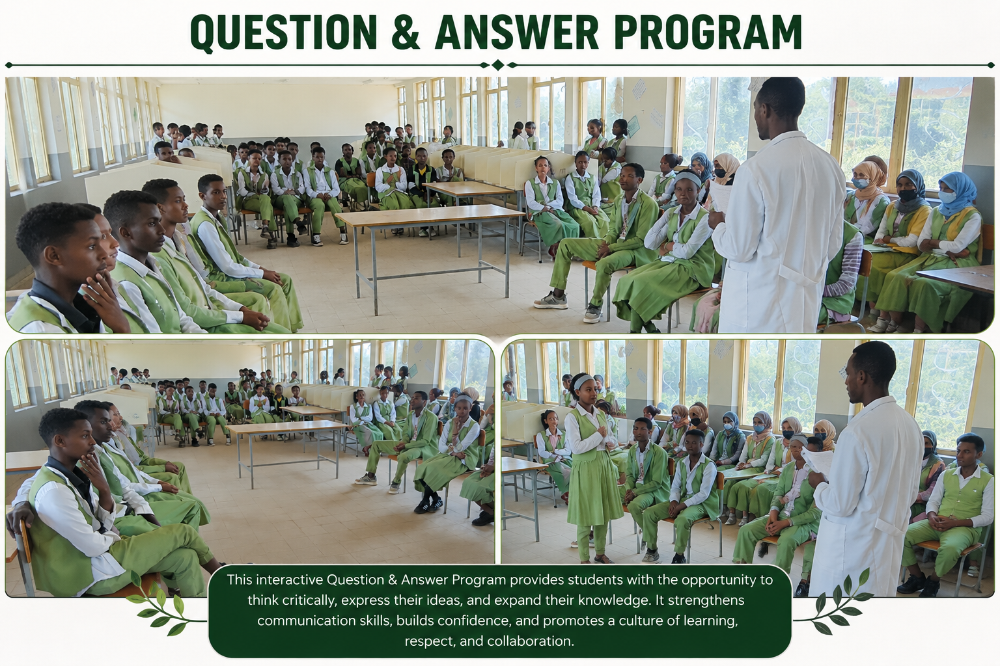
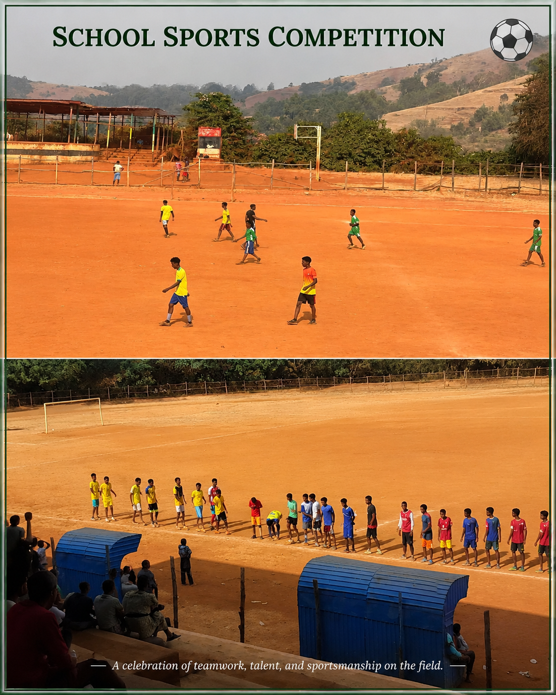
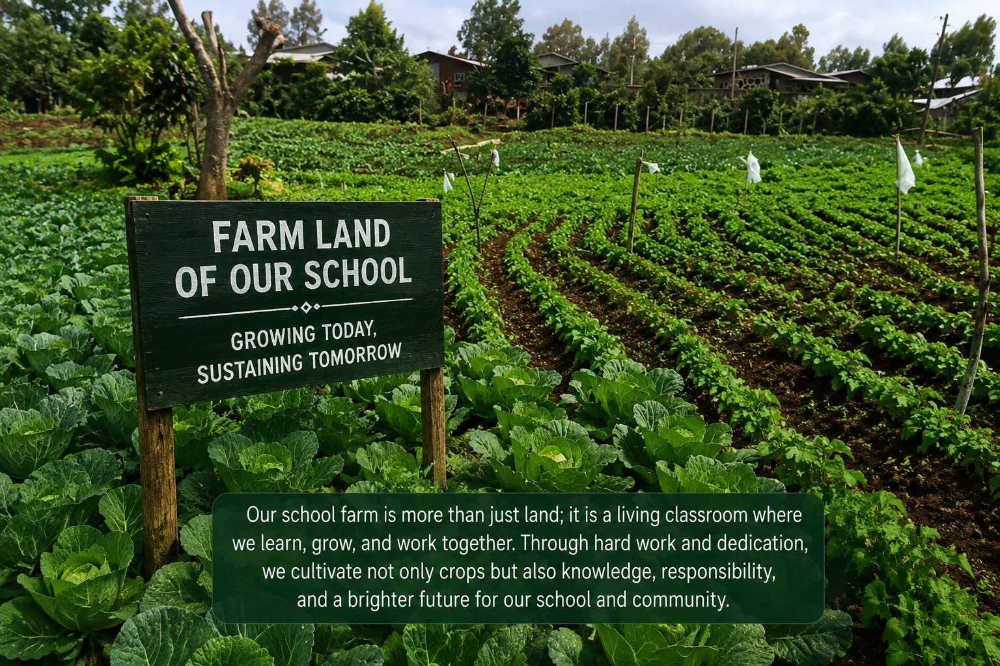
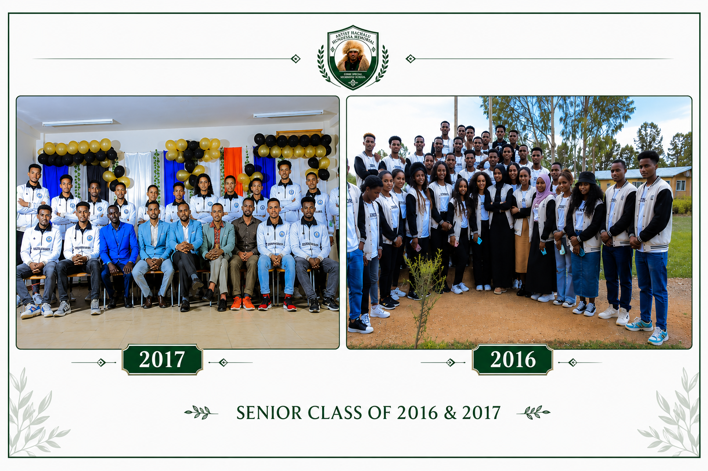
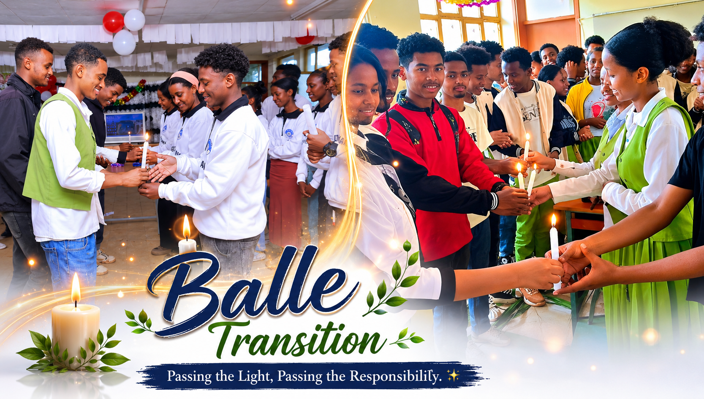

Gimbi, West Wollega, Oromia · Est. 2013 E.C.
Est. 2013 E.C. — 144+ students in building technology.
Learn moreSchool awards & student success stories.
ViewKey dates: enrollment, exams, holidays.
CalendarSchool campus & memorial events.
View70+ Q&A + Pomodoro timer.
ReadBiography, music & legacy.
ExploreMain Building — Gimbi Town (Tap to zoom)
Established in 2013 E.C. in Gimbi, West Wollega, Oromia. 144+ students trained.
To produce competent, adaptable, innovative manpower through outcome-based education.
Centre of excellence in building technology training.
Equality · Academic Freedom · Social Responsibility · Teamwork · Excellence · Integrity
📱 Scan to visit website
| Year | Achievement | By |
|---|---|---|
| 2016 E.C. | Passing All Students | Oromia Education Bureau |
| 2017 E.C. | Passing All Students | Oromia Education Bureau |
| 2018+ (Future) | Top Performer Award | Ministry of Education |
| Student | Year | Achievement |
|---|---|---|
| Guutu Habatamu | 2014 E.C. | Winner — Competition in Adama City |
| Month | Event | Details |
|---|---|---|
| Hagayyaa 23 | New Year Begins | Registration |
| Fulbaana 1 | Enkutatash | Holiday |
| Fulbaana 5 | Semester Starts | First Day |
| Fulbaana 17 | Masqal | Holiday |
| Amajjii | Final Exams S1 | All Subjects |
| Amajjii 11 | Timket | Holiday |
| Guraandhala 2 | Semester 2 | Opening |
| Waxabajjii 11 | Final Exams | End of Year |
| Waxabajjii 17-24 | Graduation 🎓 | Awarding |





List all subjects. Allocate more time to difficult ones. Use 45-min blocks with 10-min breaks. Update every two weeks.
Start 3-4 months early. Practice past papers. Join study groups. Review mistakes. Sleep 7-8 hours.
Active recall. Mind maps. Teach others. Mnemonics. Get enough sleep. Review within 24 hours.
Deep breathing. Exercise. Break tasks small. Talk to someone. Take breaks. One exam doesn't define you.
Apply 6-12 months early. Transcripts, recommendations, essay. Write personal story. Apply to many.
25 min study, 5 min break. Repeat 4x. Long break 15-30 min. Use the timer above!
Set small goals. Reward yourself. Study with friends. Track progress. Remember your dreams.
Protein, fruits, nuts, whole grains. Drink water. Avoid oily meals, sugar, caffeine.
7-8 hours. Sleep consolidates memory. Avoid all-nighters. Keep consistent schedule.
Find real connection. Break into small topics. Ask classmate. Use YouTube tutorials.
Draw diagrams. Solve numerical problems daily. Understand formulas. Conduct simple experiments. Use flashcards. Watch educational videos.
Practice daily — the only way. Start easy, increase difficulty. Write all steps. Learn from mistakes. Memorize key formulas but understand derivations.
Read English daily. Watch programs with subtitles. Practice speaking with friends. Keep vocabulary notebook. Write essays. Get feedback.
Study 25 min, break 5 min. Repeat 4x, then long break 15-30 min. Use timer above to practice this proven technique.
Set small daily goals. Reward yourself. Remember long-term dreams. Study with motivated friends. Change environment. Track progress.
Protein-rich foods, fruits, nuts, whole grains. Drink water. Avoid oily meals, sugar, caffeine. Eat light before studying.
7-8 hours nightly. Sleep consolidates memory. All-nighters reduce performance. Maintain consistent sleep schedule.
Find real-world connection. Break into small topics. Ask a classmate. Use YouTube tutorials. Reward yourself after each session.
Cornell Method: Notes, Cues, Summary. Write key points only. Use abbreviations. Review and rewrite same day.
Practice aloud. Record yourself. Prepare note cards. Anticipate questions. Arrive early. Breathe deeply. Speak slowly.
Limit to 3-5 members. Set clear agenda. Each member teaches one topic. Quiz each other. Avoid distractions. End with summary.
Feel disappointed, then move forward. Analyze what went wrong. Talk to teacher. Create new study plan. Failure is a stepping stone.
Create weekly schedule. Communicate with family about study needs. Use early morning hours. Combine activities when possible.
Ministry of Education site, Khan Academy, Coursera, YouTube educational channels, Ethiopian student Telegram forums.
Identify interests and strengths. Research job demand. Talk to professionals. Consider long-term goals. Choose what fits you.
Belief intelligence can be developed. Embrace challenges. Learn from criticism. Persist through setbacks. "I'm not good at this YET."
Use 2-minute rule for small tasks. Break tasks tiny. Remove distractions. Set earlier deadlines. Tell someone your goals.
Practice 10 min daily. Slow down. Use lined paper. Maintain consistent letter size. Legible handwriting earns extra marks.
Explain a concept simply as if teaching a child. Identify gaps. Go back to source. If you can't explain simply, you don't understand.
Create priority list. Study hardest first. Rotate subjects. Use summary sheets. Don't neglect any subject completely.
Look among teachers, older students, professionals. Approach respectfully. Show commitment. Be appreciative of their time.
Develop leadership, teamwork, time management. Strengthen applications. Reduce stress. Build friendships. Balance is key.
Specific, Measurable, Achievable, Relevant, Time-bound. Example: "Score above 80% in math by studying 1 hour daily."
Provide quiet study space. Ensure nutrition and sleep. Offer encouragement, not pressure. Celebrate effort. Avoid comparing.
Ask teacher immediately. Write down confusion. Ask classmate. Look online. Visit library. Never let confusion accumulate.
Include education, awards, volunteer work, skills. One page. Clear headings. Proofread. Ask teacher to review. Update every 6 months.
Reveal format, question types, marking schemes. Practice time management. Complete at least 5 years of past papers.
Create questions to test yourself. Identify weak spots. Practice more on difficult areas. Review regularly.
Consistent routines. Ask questions. Review regularly. Sleep well. Exercise. Set goals. Avoid cramming. Seek help when needed.
Designate study area. Keep it clean. Turn off notifications. Use website blockers. Tell family your schedule. Use instrumental music.
Rest first. Review difficult topics. Read outside curriculum. Learn a new skill. Volunteer. Prepare for upcoming topics.
Listen without defensiveness. Separate emotions. Ask for specific suggestions. Thank the teacher. Create an action plan.
Active recall. Mind maps from memory. Teach aloud. Solve past papers. Focus on weak areas. Review, don't re-learn.
Educational apps, tutorial videos, online communities, cloud backup. Limit social media — biggest distraction.
Consistency. Studying a little every day beats cramming. Small efforts compound into massive results. Build daily habits.
Prepare thoroughly. Practice relaxation. Visualize success. Talk about fears. Some anxiety is normal and can improve focus.
Morning (6-10 AM) for most people. Study difficult subjects when most alert. Avoid late-night cramming.
Gamify learning. Use colorful notes. Study with friends. Set challenges. Reward progress. Connect topics to real life.
Practice meditation. Eliminate distractions. Study in quiet place. Use Pomodoro. Exercise regularly. Get enough sleep.
Take a break. Talk to someone you trust. Remember your goals. Look at how far you've come. Break challenges smaller.
Start 6+ months early. Get exam syllabus. Practice past papers. Join prep classes. Focus on weak areas.
Allocate based on difficulty. Use weekly rotation. Don't neglect any. Review each at least twice weekly.
Eat balanced meals. Stay hydrated. Exercise 20-30 min daily. Sleep 7-8 hours. Take breaks. Avoid excessive caffeine.
Stay respectful. Understand their perspective. Focus on learning. Seek help from other sources if needed.
Set and achieve small goals. Celebrate wins. Prepare well. Practice positive self-talk. Surround yourself with supportive people.
Don't ignore — analyze. Ask why wrong. Write correct answer. Review regularly. Mistakes are best teachers.
Practice hands-on repeatedly. Understand theory behind each step. Watch demos. Ask instructors for feedback.
Schedule both. Combine activities (study groups). Set boundaries. Quality over quantity for social time.
Stop and breathe. Write everything down. Prioritize. Do one small thing. Ask for help. It's okay to not be okay.
Acknowledge hard work. Share with family. Reward yourself. Reflect on what worked. Set new goals.
Preview text first. Don't subvocalize. Use pointer. Practice skimming. Summarize after each section. Read actively.
Understand derivation. Write repeatedly. Use mnemonics. Create formula sheet. Practice applying. Review before sleep.
Outline first. Clear intro, body, conclusion. Use examples. Be concise. Proofread. Ask for feedback. Practice regularly.
Read widely. Keep word journal. Use new words in sentences. Play word games. Learn root words. Review weekly.
Read all options. Eliminate wrong ones. Watch for absolutes like "always"/"never". Go with first instinct. Manage time.
Read questions twice. Double-check calculations. Review answers if time. Stay calm. Underline key words in questions.
Use instrumental or classical. Avoid lyrics. Keep volume low. Nature sounds work well. Find what works for you.
Central topic in middle. Branch main ideas. Add sub-branches. Use colors and images. Keep keywords short. Review regularly.
Wake early. Eat light breakfast. Review key points only. Arrive 30 min early. Stay calm. Avoid discussing with anxious friends.
Read books. Take online courses. Attend workshops. Join communities. Teach others. Stay curious. Learning never ends.
(70+ questions in full version)
Gimbi, West Wollega, Oromia
+251-901632512
info@hhmemorialschool.edu.et
1986 – June 29, 2020
Art. Hachalu Hundessa — singer, songwriter, activist. Voice of the Oromo people.
Born 1986 in Ambo. Fifth of eight children.
Arrested at 17. 5 years in Karchale Ambo prison. Composed 9 songs.
Sanyii Mootii (2009). Waa'ee Keenya (2013) — #1 African album on Amazon.
"Maalan Jiraa?" became the Oromo protest anthem. His music forced regime change.
June 29, 2020 — shot in Addis Ababa at age 34.
Maal Mallisaa released posthumously (2021). Forever remembered. 🕊️